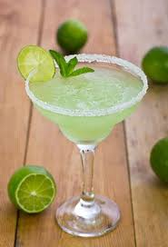

A Perfect Margarita

How To Make El Perfect Margarita
Ingredients:
- 1 fluid ounce premium tequila
- ¾ fluid ounce brandy-based orange liqueur (such as Grand Marnier®)
- ¾ fluid ounce cointreau
- ¾ fluid ounce simple syrup
- 1 fluid ounce raspberry flavored liqueur
- 1 lime, juiced
- ½ cup sweet and sour mix
Instructions:
- Salt the rims of 2 large margarita glasses. To do so, pour salt onto a small plate, moisten the rims of the glasses on a damp towel and press them into the salt.
- In a cocktail mixer 3/4 full of ice, combine tequila, Grand Marnier, cointreau, simple syrup, raspberry liqueur and lime juice. Pour in sweet and sour until ice is covered. Shake vigorously and strain into glass.
Nutrition Facts
Per Serving: 614 calories; protein 0g; carbohydrates 93.8g; fat 0.2g; cholesterol 0mg; sodium 5.6mg. Full Nutrition